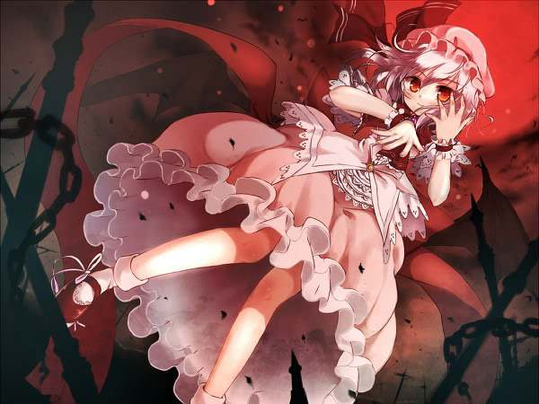

默认未选中
默认选中
默认未选中,简单的背景过渡效果,加mui-switch-animbg类即可
默认选中
默认未选中，过渡效果，加 mui-switch-anim 类即可
默认选中
巨型按钮
小型按钮
小型按钮带阴影
小圆形
巨圆形
水波纹
水波纹，必须使用button
输入框
菜单栏
你好
你好
你好
搜索框
栅格布局
1
2
3
4
5
巨幕
层级1
层级2
层级3
层级4
层级5
层级6
层级7
层级8
层级9
层级10

图片垂直居中
这是一个便利贴
这是一个便利贴
纸张存在两个像素的圆弧
毛玻璃